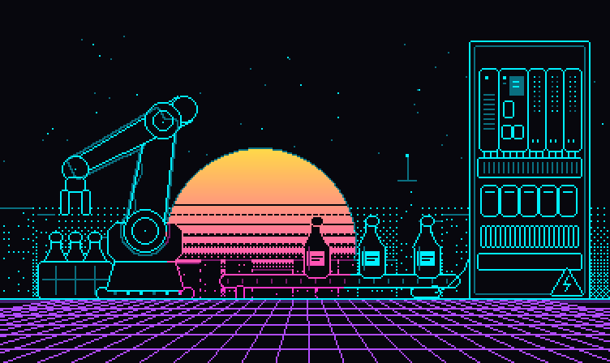

BENCE
ÉLETKOR28
// firmware frissítés sikeres: v27 → v28.0

CELLA_01 // PÁLINKA TÖLTŐSOR● RUN
01
ÉLETKOR := 27 + 1;[ OK ] Rendszerindítás ... BENCE_OS v28.0[ OK ] +1 év tapasztalat telepítve[ OK ] Hűtőfolyadék betöltve: SZILVAPÁLINKA 0,5 L[INFO] Főzte: Finna László — minőség ellenőrizve ✔[INFO] Ajándékozó: Daróczi Balázs[WARN] Túlmelegedés ellen: kupicánként üzemeltetni[ OK ] Státusz: EGÉSZSÉGEDRE!
RUNG 0001 // SZÜLINAPI RUTIN | BENCE SZÜLINAP PÁLINKA | |---] [--------] [----------( )----| | %IX24.10 %MX20.26 %QX24.10 |